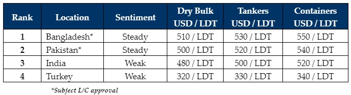

inWeekly Demolition Reports02/04/2024

Whilst various port positions remained thinned out across the Indian sub-continent ship recycling waterfronts over recent weeks,many of the tired old complaints about poor & adverse market conditions (particularly in India) or those of an extremely malnutritioned spread of recycling tonnage that remains available for sale, continue to fall on deaf ears especially given that the saturated state of affairs has brushed all industry players the wrong way since the start of the year. Accordingly, the longer the complaining seems to linger, the more these ever-pervading objections from End Buyers – valid or otherwise – seem to suggest they are being made with the sole intention of securing a cheap deal – but are they justified in doing so?
Inversely, this week concluded surprisingly for the sub-continent ship recycling nations whereby their respective port reports turned out busier (from an LDT perspective) than recent weeks, leaving local Recyclers scrambling to get their respective shares of the odd unit in, and that too at ever-competitive rates. As such, the dearth of vessels currently available for a recycling sale will certainly ensure that any mis-directed dreams of discounted deals at this juncture of the year, are likely to remain just that…i.e. dreams. In the same vein, given the onslaught of a rich diet of low(er) quality selection of laid up, small(er) LDT, Chinese built tonnage that has been consistently proposed for recycling, is simultaneously frustrating the Ship Recycling community into offering lower & lower numbers on such units – several reportedly seeing even below USD 500/Ton.
As such, it remains appreciable if Ship Recyclers would rather their yards sit dormant through this time, than have to deal with the possibility / headaches in paying firmer levels on the questionable quality of incoming vessels that will more than likely have issues at the time of delivery, and we are therefore witnessing a small, yet growing number of yards that could be entering a vegetative state sooner rather than later. And why not? With so little activity to keep global Recyclers even interested (let alone busy), it’s certainly worth a try given that it has helped Aliaga Recyclers.
Overall, conditions in India remain bleak as steel plate volatility resumes, the Indian Rupee starts to struggle, and a discernable election anxiety (in case the Modi party fails to win another term) has been increasingly permeating of late. Bangladeshi and Pakistani markets continue to fare comparatively better, though many units are likely to be ignored as most End Buyers are now preferring to wait and watch the market, rather than fill their plots with subpar tonnage. Whiffings of L/C restrictions also remain of concern as it may not be ‘business as usual’ for far too long.
For week 13 of 2024, GMS demo rankings / pricing for the week are as below.

📄 Download PDF: Ship-recycling-market-insight-week-13-2024-Stay-High-Or-Nigh.pdfSource: GMS,Inc. ,https://www.gmsinc.net/gms_new/index.php/web